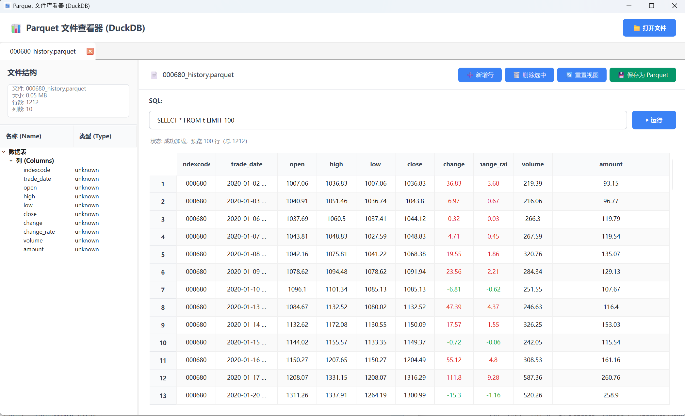

ParquetViewer
不靠 pandas，也能快速看 ParquetBrowse Parquet without the pandas stack
基于 DuckDB 与 PyQt6 的桌面数据查看器，支持大文件浏览、SQL 查询和表格编辑。A DuckDB and PyQt6 desktop viewer for large Parquet files, with SQL queries and table editing.
展开功能与界面预览Explore features & UI preview
多标签打开文件，表格中滚动、排序和查看列；可编辑单元格、增删行并保存回 Parquet，也可通过 SQL 直接查询。支持文件关联和 Windows 便携 EXE。Open multiple files in tabs; scroll, sort and inspect columns in a grid. Edit cells, add or delete rows and save to Parquet, or query with SQL. Includes file association and a portable Windows EXE.
